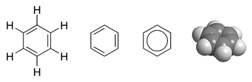
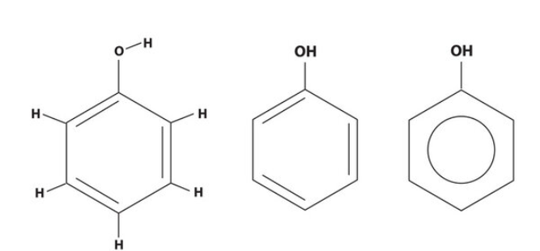
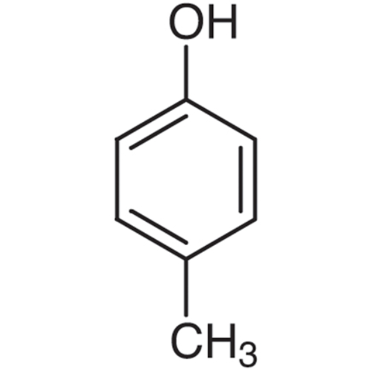
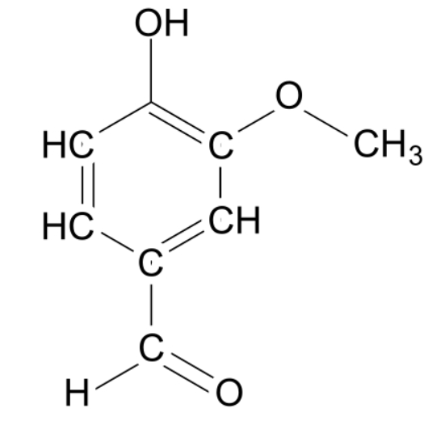
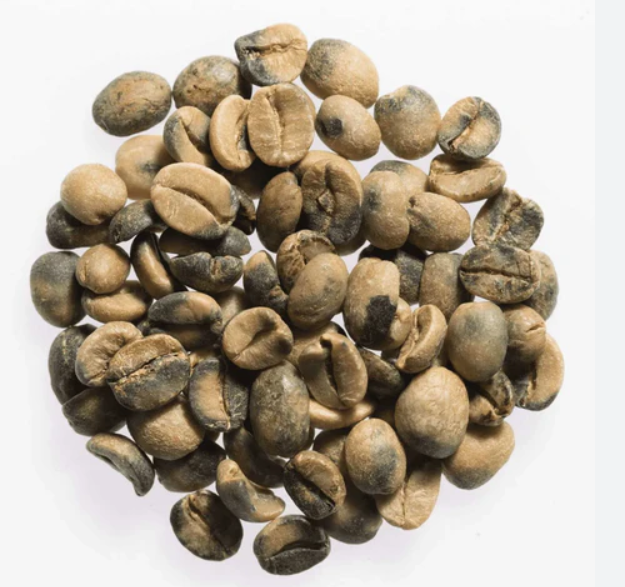
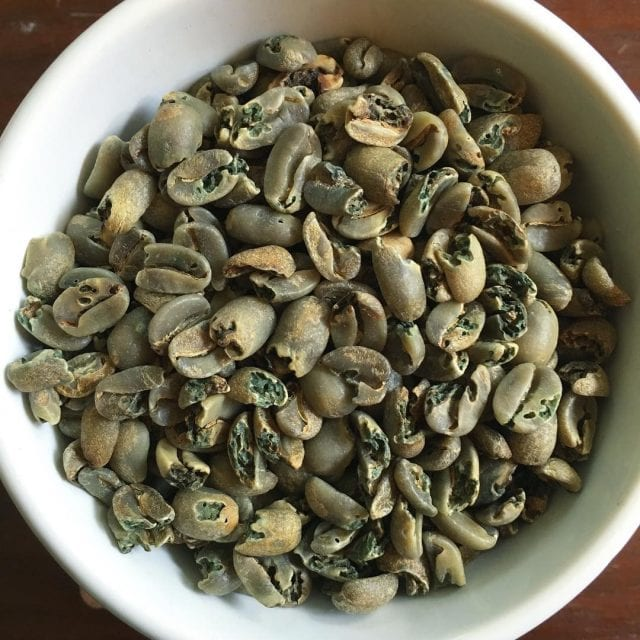

Fermentation & eau
Définition précise : Phénolique
•Au sens chimique :
Un composé phénolique est toute molécule organique qui possède un cycle aromatique benzénique(1) lié à un groupe hydroxyle(2) (-OH).
C’est donc une très grande famille qui inclut des composés très différents sensoriellement : vanilline (sucrée) aussi bien que phénol pur (désinfectant).
•Au sens sensoriel (dégustation café) :
On parle de “défaut phénolique” quand un café exprime des arômes médicinaux, goudronnés, plastiques, hydrocarbures, souvent liés à des phénols lourds (cresols, phénol, créosol).
Ici, “phénolique” est donc un descripteur négatif, et non une famille chimique entière.
🟢 Phénols “agréables” (contributeurs positifs)
| Molécule | Note sensorielle | Origine |
|---|---|---|
| Vanilline | Vanille, pâtissier, doux | Fermentation avec vanille, ou dégradation de lignine lors de la torréfaction |
| 4-Vinylguaiacol | Clou de girofle, épice, phénolique doux | Dégradation d’acide férulique (précurseur des CGA) à la torréfaction |
| Guaiacol (à faible dose) | Fumé subtil, boisé | Dégradation des acides chlorogéniques |
| Eugénol | Épicé, girofle, doux | Présent dans certaines fermentations (ou contaminations “propres”) |
🔴 Phénols “défauts” (perçus comme négatifs)
| Molécule | Note sensorielle | Origine |
|---|---|---|
| Phénol (pur) | Désinfectant, médicinal | Dégradation poussée des CGA / contamination |
| Cresols (o-, m-, p-cresol) | Goudron, hydrocarbure, caoutchouc | Torréfaction poussée, dégradation thermique |
| Créosol | Médicinal, goudronné, fumée lourde | Torréfaction foncée, pyrolyse |
| 4-Éthylphénol | Animal, cuir, plastique | Fermentation contaminée (Brettanomyces, levures sauvages) |
(1) Définition d’un “cycle benzénique”
C'est “une boucle” fermée de 6 atomes de carbone (un hexagone). Ces carbones sont reliés entre eux avec des liaisons particulières appelées liaisons aromatiques (une alternance de simples et doubles liaisons qui se “délocalisent”). Cette structure très stable s’appelle benzène.
Quand on dit “cycle benzénique”, ça veut dire :
une molécule qui contient ce “petit anneau à 6 carbones” typique.
(2) Définition d’un groupe hydroxyle (-OH)
C’est un petit morceau de molécule composé de :
•1 atome d’oxygène (O)
•1 atome d’hydrogène (H)
On l’écrit –OH car il se fixe à une autre partie d’une molécule.
Exemple :
Dans l’eau (H₂O), chaque hydrogène est accroché à un oxygène. Dans un alcool (comme l’éthanol), il y a un groupe –OH accroché à une chaîne de carbones → c’est ce qui fait que c’est un alcool.
À retenir
•Tous les “phénoliques” ne sont pas négatifs.
•En chimie, “phénolique” = grande famille moléculaire.
•En dégustation, “phénolique” = défaut sensoriel lié aux phénols lourds, médicinaux/hydrocarbures.
•On peut donc avoir dans une même tasse :
•de la vanilline (positive, douce)
•et du phénol/cresol (défaut) → d’où la confusion.




Figure de la molécule “Benzène” Figure de la molécule “Phenol” Figure de la mollécule “Crésol” Figure de la molécule “Vanilline”
Définition précise : Earthy (terreux)
•Au sens chimique / origine :
Le défaut earthy est lié à la présence de molécules produites par des actinomycètes (bactéries du sol, surtout Streptomyces) et parfois par des moisissures.
Les composés clés sont proches de ceux du “moldy”, mais pas identiques :
•Géosmine (C₁₂H₂₂O) → note terre humide, cave.
•2-Méthylisobornéol (2-MIB, C₁₁H₂₀O) → odeur de terre mouillée, poussière.
Ces deux molécules sont en fait les mêmes que dans le “moldy”, mais en proportion et contexte différents : ici, elles viennent plus des bactéries du sol que des champignons de stockage.
•Au sens sensoriel (dégustation café) :
On parle de “earthy” quand un café exprime des notes de terre, sol humide, betterave, poussière sèche.
Typiquement associé aux cafés de qualité inférieure (par ex. certaines productions d’Inde, Sulawesi), ou à des lots ayant eu un contact excessif avec le sol (séchage au sol, mauvaise manutention).
Molécules associées à “earthy”
| Molécule | Note sensorielle | Origine |
|---|---|---|
| Géosmine | Terre humide, cave | Métabolite bactérien (Streptomyces) |
| 2-Méthylisobornéol (2-MIB) | Terre mouillée, poussière | Actinomycètes (bactéries du sol) |
| Divers alcools terpéniques | Terre, betterave, poussière | Dégradation microbienne dans le sol |
À retenir
•Earthy ≠ Moldy :
•Moldy = moisi, champignon, carton humide → cause = contamination fongique (stockage).
•Earthy = odeur de terre, poussière, racine → cause = contamination par bactéries du sol (Streptomyces) ou séchage au sol.
•Les deux partagent des molécules clés (géosmine, 2-MIB), mais l’origine biologique et le profil sensoriel diffèrent.
•Comme moldy, c’est un défaut grave éliminatoire en cupping.

Figure de grains vert avec défauts, à la vue des grains, peut-être moldy ou bien earthy.
Définition précise : Swampy (marécageux)
•Au sens chimique / origine :
“Swampy” est associé à une mauvaise fermentation anaérobie ou à un stockage prolongé en milieu humide.
Il combine souvent des notes terreuses + réductrices + soufrées.
Molécules typiques :
•Acide butyrique (C₄H₈O₂) → odeur de beurre rance, putride.
•Acide isovalérique (C₅H₁₀O₂) → fromage, sueur, animal.
•1-Octen-3-ol (C₈H₁₆O) → champignon humide.
•Composés soufrés réduits (H₂S, méthanethiol, diméthylsulfure) → odeur d’œuf, marécage.
👉 Ce défaut apparaît quand le café a été en contact prolongé avec l’eau stagnante (dans des bassins, ou sur le sol détrempé) ou lors de fermentations mal maîtrisées → développement de bactéries anaérobies et production de métabolites soufrés et acides volatils.
•Au sens sensoriel (dégustation café) :
Notes marécageuses, putrides, soufrées, légumes pourris, boue stagnante.
C’est un défaut sévère, immédiatement éliminatoire en cupping.
Molécules associées à “swampy”
| Molécule | Note sensorielle | Origine |
|---|---|---|
| Acide butyrique | Beurre rance, putride | Fermentation anaérobie bactérienne |
| Acide isovalérique | Fromage, sueur, animal | Fermentation non contrôlée |
| 1-Octen-3-ol | Champignon humide | Métabolisme microbien |
| Méthanethiol (CH₄S) | Dégradation d’acides aminés soufrés | |
| Diméthylsulfure (C₂H₆S) | Activité bactérienne en anaérobie |
À retenir
•Swampy = profil marécageux/soufré, différent de moldy (moisi) ou earthy (terre).
•Origine = stagnation d’eau ou fermentation anaérobie contaminée.
•Marqué par la présence de soufrés volatils + acides gras volatils → arômes très puissants, seuils très bas.
•Défaut grave, rejet systématique.
Définition précise : Rioy
•Au sens chimique / origine :
“Rioy” est un défaut spécifique, surtout associé aux cafés du Brésil (notamment de la région de Rio de Janeiro, d’où le nom).
Il provient de la présence de certains phénols halogénés et iodés formés lors de :
•stockage du café vert dans des conditions humides et chaudes,
•contamination microbienne spécifique,
•ou contact prolongé avec l’eau (lavage, séchage).
Molécules suspectées :
•Chlorophénols (ex. 2,4,6-trichlorophénol) → notes médicinales.
•Iodophénols (4-iodophénol) → notes iodées, désinfectant, hôpital.
•Au sens sensoriel (dégustation café) :
Un café est dit rioy quand il exprime des arômes iodés, phénoliques, médicinaux, désinfectant, parfois décrits comme :
•“eau iodée”,
•“pharmaceutique / antiseptique”,
•“produit chimique / plastique brûlé”.
Défaut sévère, éliminatoire.
Molécules associées à “rioy”
| Molécule | Famille | Note sensorielle | Origine |
|---|---|---|---|
| 2,4,6-Trichlorophénol | Phénol chloré | Désinfectant, chimique | Dégradation microbienne + humidité |
| 4-Iodophénol | Phénol iodé | Iodé, antiseptique | Stockage humide, contamination spécifique |
| Autres phénols lourds | Phénoliques | Médicinal, plastique | Vieillissement, contamination |
À retenir
•Rioy = défaut phénolique iodé, typiquement associé aux cafés brésiliens.
•Molécules = phénols halogénés (chlorés / iodés).
•Notes iodées, chimiques, désinfectant → facilement reconnaissables en cupping.
•Défaut grave, éliminatoire en spécialité.
Définition précise : Sour (aigre / fermenté acide)
•Au sens chimique / origine :
Le défaut Sour provient d’une fermentation acide non contrôlée des cerises de café, souvent :
•quand elles restent trop longtemps en cuve ou en tas,
•quand l’eau de fermentation est stagnante,
•ou quand le séchage démarre trop tard.
Molécules typiques :
•Acide acétique (C₂H₄O₂) → vinaigre, piquant.
•Acide butyrique (C₄H₈O₂) → aigre-putride, rance.
•Acide lactique (C₃H₆O₃) (en excès) → aigre-yaourt.
•Acide isovalérique (C₅H₁₀O₂) → fromage, sueur.
•Au sens sensoriel (dégustation café) :
Un café est dit sour quand il exprime :
•une acidité piquante, agressive, vinaigrée,
•des notes de yaourt tourné, aigrelet, fruit fermenté,
•parfois une sensation piquante en bouche déséquilibrée.
Ce n’est pas une acidité “vive” ou “brillante” (positive), mais une acidité acétique/butyrique désagréable.
Molécules associées à “Sour”
| Molécule | Famille | Note sensorielle | Origine |
|---|---|---|---|
| Acide acétique | Acide organique | Vinaigre, piquant | Fermentation acétique incontrôlée |
| Acide butyrique | Acide gras volatil | Putride, aigre-rance | Fermentation anaérobie longue |
| Acide lactique (excès) | Acide organique | Yaourt, aigre doux | Fermentation lactique déséquilibrée |
| Acide isovalérique | Acide organique | Fromage, sueur | Fermentation bactérienne |
À retenir
•Sour = acidité fermentaire désagréable, pas à confondre avec l’acidité “positive” du café.
•Toujours lié à une fermentation non maîtrisée → excès d’acides volatils.
•Défaut éliminatoire en cupping, car il dénature le profil sensoriel.
Vieillissement & stockage
Définition précise : Baked (cuit / plat)
•Au sens chimique / origine :
“Baked” est un défaut de torréfaction causé par un profil thermique trop lent ou mal conduit.
Typiquement :
•chute du Rate of Rise (ROR) → manque d’énergie dans le grain,
•longue phase de développement post-1er crack,
•absence de dynamique thermique (torréfaction “plate”).
Conséquence → certaines réactions de Maillard et Strecker ne se produisent pas pleinement, les précurseurs aromatiques (sucres, AA) sont mal transformés.
•Au sens sensoriel (dégustation café) :
Un café est dit baked quand il présente une tasse fade, plate, sans relief, avec des notes de :
•céréales cuites / bouillies,
•pain blanc / pâte à pain,
•carton mouillé ou papier.
👉 La tasse manque de vivacité, d’acidité, et semble “cuite à l’eau” plus que torréfiée.
Molécules associées à “baked”
| Situation | Conséquence chimique | Impact sensoriel |
|---|---|---|
| ROR trop bas / Maillard inachevé | Peu de pyrazines, thiols, aldéhydes aromatiques | Manque de notes grillées/noisette/café typique |
| Développement trop long | Dégradation lente des sucres → aldéhydes plats | Arômes céréale/pain bouilli |
| Énergie insuffisante | Sous-formation des volatils clés | Tasse fade, aqueuse |
À retenir
•Baked ≠ Stale :
•Baked = défaut lié à la torréfaction (profil mal mené, énergie insuffisante).
•Stale = défaut lié au café vert (vieillissement, stockage).
•Sensoriellement, les deux sont plats et sans relief, mais :
•Baked → profil “céréales cuites, pâte à pain, carton mouillé”.
•Stale → profil “carton sec, vieux sac de jute, papier”.
•En cupping, baked est éliminatoire pour un café de spécialité → car il vient du torréfacteur et non du lot vert.
Définition précise : Stale (rassis / vieilli)
•Au sens chimique / origine :
“Stale” correspond au vieillissement du café vert ou torréfié, avec oxydation et volatilisation des composés aromatiques.
Les principaux mécanismes :
•Oxydation des lipides → formation d’aldéhydes gras (hexanal, nonanal, heptanal).
•Perte des composés volatils frais (thiols, esters, furaneols).
•Polymérisation des mélanoïdines → tasse plus plate, fade.
•Au sens sensoriel (dégustation café) :
On parle de “stale” quand un café a perdu sa vivacité et exprime des arômes plats, carton, vieux papier, céréale sèche, rance léger.
Il peut s’accompagner d’une perte d’acidité et de corps → café “mort” ou “plat”.
Molécules associées à “stale”
| Molécule | Note sensorielle | Origine |
|---|---|---|
| Hexanal | Carton, herbe sèche | Oxydation des acides gras insaturés |
| Nonanal | Céréale sèche, vieux papier | Oxydation lipidique |
| Heptanal | Fade, carton gras | Vieillissement |
| Perte de furaneols/thiols | Disparition des notes fruitées et “roasty” | Évaporation / dégradation |
À retenir
•Stale ≠ Rancid :
•Stale = café plat, carton, papier (lié à oxydation légère + perte de fraîcheur).
•Rancid = café huileux, gras, beurré tourné (oxydation plus poussée des lipides).
•Causes fréquentes :
•Café vert trop vieux ou mal stocké.
•Café torréfié conservé trop longtemps (ou mal emballé).
•C’est un défaut sensoriel secondaire mais très pénalisant commercialement.
Définition précise : Musty (poussiéreux / moisi sec)
•Au sens chimique / origine :
“Musty” est un défaut lié à un mauvais stockage du café vert, surtout quand il est gardé dans des environnements humides, poussiéreux ou mal ventilés.
Il peut aussi apparaître quand le café a absorbé des odeurs externes (sac de jute humide, entrepôt mal isolé).
Molécules typiques :
•1-Octen-3-ol (C₈H₁₆O) → champignon sec, cave.
•2-Méthylisobornéol (C₁₁H₂₀O) → poussière, renfermé.
•Géosmine (C₁₂H₂₂O) → terre humide, renfermé.
Mais ici, contrairement à swampy, ces notes sont moins putrides / soufrées : elles rappellent surtout le poussiéreux et le renfermé.
•Au sens sensoriel (dégustation café) :
Un café est dit musty quand il exprime des arômes de :
•poussière,
•grenier, cave sèche,
•sac de jute humide,
•vieux meuble, renfermé.
Défaut marqué, mais souvent perçu comme moins violent que moldy ou swampy.
Molécules associées à “musty”
| Molécule | Famille | Note sensorielle | Origine |
|---|---|---|---|
| 1-Octen-3-ol | Alcool fongique | Champignon sec | Métabolisme fongique léger |
| 2-MIB | Terpénoïde | Poussière, renfermé | Stockage humide |
| Géosmine | Terpénoïde | Terre, cave | Contamination microbienne |
| Composés absorbés | Divers | Sac de jute, entrepôt | Absorption d’odeurs externes |
À retenir
•Musty ≠ Moldy :
•Musty = poussiéreux, renfermé, carton humide (souvent lié à stockage, absorption d’odeurs).
•Moldy = moisi, champignon humide, putride (lié à contamination fongique active).
•Origine = principalement stockage du vert, pas fermentation.
•Défaut éliminatoire, mais plus subtil que swampy ou rioy.
Définition précise : Aged / Past Crop (vieux café / café de récolte passée)
•Au sens chimique / origine :
“Aged” ou “Past crop” décrit un café vert qui a subi un vieillissement excessif avant torréfaction.
Ce vieillissement est dû à un stockage prolongé (souvent > 12 mois), ou à un entreposage dans de mauvaises conditions (humidité, chaleur, oxygène).
Les changements chimiques principaux :
•Oxydation progressive des lipides → apparition d’aldéhydes gras (hexanal, nonanal).
•Dégradation des acides chlorogéniques et sucres → perte d’intensité aromatique.
•Absorption d’odeurs externes (sac de jute, entrepôt) → goût poussiéreux ou “jute”.
•Au sens sensoriel (dégustation café) :
Un café est dit aged / past crop quand il exprime des notes de :
•bois sec,
•vieux sac de jute,
•poussière, carton,
•parfois terre sèche ou renfermé.
La tasse est plate, sans vivacité, avec acidité effacée.
Molécules associées à “Aged / Past crop”
| Molécule | Famille | Note sensorielle | Origine |
|---|---|---|---|
| Hexanal | Aldéhyde gras | Carton, vieux papier | Oxydation lipides |
| Nonanal | Aldéhyde gras | Bois sec, fade | Vieillissement |
| Heptanal | Aldéhyde gras | Poussière, carton | Vieillissement prolongé |
| Composés absorbés | Divers | Jute, poussière | Sacs / entrepôt |
A retenir
•Aged / Past crop = café vert trop vieux, oxydé, ayant perdu fraîcheur et vivacité.
•Différent de Stale :
•Stale = carton/fade lié à oxydation légère (café vert un peu fatigué, ou torréfié trop vieux).
•Past crop = plus marqué, lié à un café vert ancien (récolte passée), avec des notes poussiéreuses, boisées, jute.
•Défaut gustatif éliminatoire pour un café de spécialité.
Définition précise : Baggy (goût de sac / jute)
•Au sens chimique / origine :
“Baggy” est un défaut gustatif qui provient de l’absorption d’odeurs externes, principalement celles des sacs de jute dans lesquels le café vert est stocké ou transporté.
Cela survient surtout si :
•le café reste longtemps en sac (stockage prolongé),
•les sacs sont de qualité médiocre ou mal traités,
•le stockage est fait dans un entrepôt humide, poussiéreux, mal ventilé.
Molécules impliquées (non spécifiques mais caractéristiques) :
•Composés volatils du jute (lignanes, huiles, phénols légers),
•Notes poussiéreuses liées à des aldéhydes oxydés (hexanal, nonanal).
•Au sens sensoriel (dégustation café) :
Un café est dit baggy quand il exprime des notes de :
•sac de jute,
•poussière,
•papier humide,
•carton renfermé.
Le profil aromatique est altéré, masqué par le goût de l’emballage, sans vivacité ni netteté.
Molécules associées à “Baggy”
| Molécule / famille | Note sensorielle | Origine |
|---|---|---|
| Hexanal, Nonanal (aldéhydes) | Carton, poussière | Oxydation lipides + stockage prolongé |
| Phénols légers (du jute) | Jute, poussiéreux | Migration depuis le sac |
| Composés ligneux (lignanes) | Bois sec, carton | Fibres végétales du sac |
À retenir
•Baggy = goût de sac de jute → absorption d’odeurs externes.
•Différent de Stale / Past Crop :
•Stale = carton/papier lié à oxydation du café.
•Past crop = poussiéreux/boisé lié à vieillissement du café vert.
•Baggy = goût externe, directement issu du sac de stockage.
•Défaut typique, surtout marqué sur des cafés verts restés longtemps en sacs de jute bas de gamme.
Définition précise : Moldy (moisi)
•Au sens chimique / origine :
“Moldy” est un défaut gustatif causé par la contamination fongique du café vert (moisissures, surtout Aspergillus et Penicillium).
Cela survient quand :
•le café est séchée trop lentement,
•ou stocké dans un environnement trop humide / mal ventilé.
Les champignons produisent des composés volatils caractéristiques :
•Géosmine (C₁₂H₂₂O) → terre humide, cave.
•2-Méthylisobornéol (2-MIB, C₁₁H₂₀O) → moisi, carton humide.
•1-Octen-3-ol (C₈H₁₆O) → champignon frais.
•Au sens sensoriel (dégustation café) :
Un café est dit moldy quand il exprime des notes de :
•moisi,
•champignon humide,
•carton mouillé,
•cave humide / grenier moisi.
Défaut lourd, facilement identifiable et éliminatoire en cupping.
Molécules associées à “Moldy”
| Molécule | Note sensorielle | Origine |
|---|---|---|
| Géosmine | Terre humide, cave | Métabolite fongique (Aspergillus, Penicillium) |
| 2-MIB | Moisi, carton humide | Métabolisme fongique |
| 1-Octen-3-ol | Champignon frais | Métabolisme fongique |
| Autres COV fongiques | Poussière, renfermé | Stockage humide |
À retenir
•Moldy = contamination fongique → notes de moisi, carton mouillé, champignon humide.
•À distinguer de :
•Musty (poussiéreux, cave sèche, jute renfermé).
•Earthy (terre, racine, sol).
•Swampy (eau stagnante, soufré, putride).
•Défaut éliminatoire, toujours lié à un mauvais séchage ou stockage du vert.
•

Figure café vert moisi donnant le defaut ”moldy”
Maturité & récolte
Unripe / Immature
Défaut lié à une récolte avant maturité complète, se traduisant principalement par une expression sensorielle végétale (pois vert, herbe, astringence), liée à la présence de méthoxypyrazines.
Le grain peut être visuellement normal après torréfaction.
•Au sens chimique / origine :
“Unripe” désigne un café dont une partie des cerises a été récoltée avant maturité.
Ces grains verts-immatures contiennent :
•moins de sucres et d’acides organiques,
•plus de chlorophylle,
•et surtout des concentrations élevées de méthoxypyrazines, molécules responsables des notes herbacées et végétales.
Ces pyrazines se forment naturellement dans le fruit avant maturation et ne disparaissent pas à la torréfaction.
Molécules clés :
•2-Méthoxy-3-isopropylpyrazine (MIP) → pois vert, végétal cru.
•2-Méthoxy-3-sec-butylpyrazine (MSBP) → poivron vert, tige verte.
•2-Isobutyl-3-méthoxypyrazine (IBMP) → herbe, tige, végétal sec.
•Au sens sensoriel (dégustation café) :
Un café est dit unripe quand il exprime des notes de :
•pois vert / haricot cru,
•poivron vert / herbe coupée,
•astringence en bouche,
•amertume sèche / tanin végétal.
👉 La tasse paraît verte, dure, déséquilibrée, avec peu de douceur et d’acidité.
Molécules associées à “Unripe”
| Molécule | Famille | Note sensorielle | Origine |
|---|---|---|---|
| 2-Méthoxy-3-isopropylpyrazine | Pyrazine | Pois vert, végétal cru | Grains immatures |
| 2-Méthoxy-3-sec-butylpyrazine | Pyrazine | Poivron vert, tige | Grains verts |
| 2-Isobutyl-3-méthoxypyrazine | Pyrazine | Herbe, végétal sec | Récolte précoce |
| Chlorophylles oxydées | Pigments | Amer, végétal sec | Café non mûr / séché trop vite |
À retenir
•Unripe = grains immatures → goût végétal, herbacé, pois vert.
•Lié à une maturité hétérogène à la récolte ou un tri insuffisant.
•Défaut sensoriel fréquent, parfois masqué dans des blends mais éliminatoire en spécialité.
•À distinguer de :
•Woody (vieux / sec, pas vert),
•Phenolic (chimique / médicinal),
•Quaker (immature non développé à la torréfaction, goût cacahuète crue).
Quakers (grains immatures non développés à la torréfaction)
Il s’agit de grains dont la composition (faible sucres, AA) empêche un développement correct à la torréfaction. Ils restent clairs (beige/jaune) et produisent une tasse fade, céréalière, cacahuète crue.
Au sens physiologique / origine :
Les quakers sont issus de cerises de café immatures (souvent récoltées trop tôt, dures, peu sucrées) qui :
manquent de sucres réducteurs et d’acides aminés,
contiennent encore beaucoup de chlorophylle,
et présentent parfois une densité plus faible → ils flottent dans l’eau pendant le tri.
👉 Les quakers sont donc très souvent liés aux floaters (grains légers, sous-développés).
Au sens chimique / torréfaction :
Lors de la cuisson, ces grains :
ne brunissent pas correctement (manque de réaction de Maillard),
restent clairs, beige-jaune, même après un roast normal,
produisent peu ou pas de composés aromatiques typiques du café torréfié (pyrazines, thiols, furaneols).
Au sens sensoriel (dégustation café) :
En tasse, les quakers donnent des notes :
cacahuète crue,
céréale fade / carton sec,
pâte crue / noisette non torréfiée,
parfois herbacé / astringent.
👉 Ils “éteignent” la tasse : manque de sucrosité, d’équilibre, et accentuent la sécheresse finale.
Molécules et indicateurs typiques
| Molécule / caractéristique | Famille | Note sensorielle | Origine |
|---|---|---|---|
| 2-Méthoxy-3-isopropylpyrazine | Pyrazine | Pois vert, végétal sec | Cerises immatures |
| Hexanal | Aldéhyde | Carton, sec | Lipides oxydés (peu transformés) |
| Manque de furaneols / pyrazines “roasty” | — | Fade, non torréfié | Réaction de Maillard incomplète |
| Chlorophylles résiduelles | Pigment | Amer, herbacé | Grain immature |
À retenir
Quaker = grain issu d’une cerise immature, souvent repérable visuellement (jaune/beige après torréfaction).
Souvent flotteur lors du tri par densité → signe d’immaturité.
Goût typique : cacahuète crue, carton, céréale fade, sans note “roasty”.
Défaut de récolte / tri, non de torréfaction.
Même un seul quaker peut déséquilibrer une tasse dans une petite mouture.
Overripe (surmûri / fruit fermenté)
Au sens chimique / origine :
“Overripe” désigne des cerises trop mûres ou déjà en fermentation naturelle au moment de la récolte.
Elles ont :
une teneur en sucre très élevée,
un pH plus bas,
et une activité microbienne spontanée (levures & bactéries).
Lors de la transformation, ces cerises surmûries continuent de fermenter de manière incontrôlée, produisant :
alcools (éthanol),
esters fruités (acétate d’éthyle, isoamyl-acétate, éthyl-butanoate),
et parfois des acides gras volatils (acétique, butyrique).
Au sens sensoriel (dégustation café) :
Un café est dit overripe quand il exprime des notes de :
fruit fermenté,
alcool / vin / rhum,
prune trop mûre / banane fermentée,
parfois une acidité vineuse ou volatile.
👉 Le profil devient “lourd”, sucré-acide, manquant de fraîcheur et d’équilibre.
Molécules associées à “Overripe”
| Molécule | Famille | Note sensorielle | Origine |
|---|---|---|---|
| Éthanol | Alcool | Vin, alcool | Fermentation naturelle excessive |
| Acétate d’éthyle | Ester | Fruit fermenté, solvant doux | Activité levurienne |
| Isoamyl-acétate | Ester | Banane mûre | Levures (Saccharomyces spp.) |
| Éthyl-butanoate | Ester | Ananas, fruit sucré | Fermentation prolongée |
| Acide butyrique | Acide gras volatil | Putride, aigre | Dégradation avancée des sucres |
À retenir
Overripe ≠ Fermented / Sour :
Overripe = fruit trop mûr, sucré-alcoolisé, fermentation douce → arômes “vin”, “rhum”, “fruit compoté”.
Fermented / Sour = fermentation acide ou putride → arômes “vinaigre”, “yaourt”, “piquant”.
Origine = récolte trop tardive + fermentation naturelle incontrôlée.
Peut être toléré à faible intensité dans certains cafés naturels (donne du “funky” ou “winey”), mais considéré comme un défaut en cupping standard.
Woody (boisé / sec / vieux bois)
•Au sens chimique / origine :
Le défaut Woody provient du vieillissement du café vert, d’un séchage trop lent ou d’un stockage prolongé dans un environnement sec.
Avec le temps :
•les lipides et sucres s’oxydent,
•les composés aromatiques volatils (thiols, esters, furaneols) disparaissent,
•et la structure cellulaire du grain se dessèche et se lignifie.
Cela conduit à l’apparition de notes boisées, sèches et poussiéreuses, rappelant le bois ancien ou le carton sec.
•Au sens sensoriel (dégustation café) :
Un café est dit woody quand il exprime des notes de :
•bois sec / vieux bois,
•carton sec,
•papier,
•parfois paille, foin, fibre végétale.
👉 La tasse est plate, sèche, sans douceur ni complexité aromatique.
Molécules associées à “Woody”
| Molécule | Famille | Note sensorielle | Origine |
|---|---|---|---|
| Heptanal | Aldéhyde gras | Bois sec, poussière | Oxydation des lipides |
| Nonanal | Aldéhyde gras | Papier, foin | Vieillissement du vert |
| Composés ligneux (lignanes) | Phénoliques | Bois sec | Dégradation structurelle du grain |
| Manque de furaneols / esters | — | Tasse fade | Perte aromatique liée à l’âge |
À retenir
•Woody = goût de bois sec / vieux / carton.
•Origine = stockage trop long ou séchage lent → café “desséché” ou “fatigué”.
•Différent de :
•Stale / Past crop → carton/jute/poussière (oxydation globale).
•Musty → poussiéreux humide, grenier.
•Rancid → gras tourné, beurré.
•C’est un défaut gustatif secondaire, souvent signe d’un café hors fraîcheur.
En résumé
| Type | Cause principale | Arômes typiques | Gravité |
|---|---|---|---|
| Woody | Café vert vieilli / séché trop lentement | Bois sec, carton, paille | Secondaire à sévère selon intensité |
| Stale | Oxydation légère (café fatigué) | Carton sec, vieux papier | Secondaire |
| Past crop | Vieillissement avancé | Jute, poussière, bois sec | Secondaire à primaire |
Contaminations & environnements
Smoky (fumé / cendré)
•Au sens chimique / origine :
Le défaut Smoky dans le café vert provient d’une contamination par la fumée pendant le séchage ou le stockage.
Cela se produit quand :
•le café est séché au feu de bois (surtout dans certaines zones humides ou rurales),
•ou stocké dans des entrepôts mal ventilés exposés à la fumée de combustion (bois, diesel, charbon).
Ces gaz contiennent des composés aromatiques polycycliques (hydrocarbures et phénols), très odorants et persistants :
•Guaiacol (C₇H₈O₂) → fumée, bois brûlé, bacon.
•Cresols (C₇H₈O) → goudron, antiseptique.
•Phénol (C₆H₅OH) → désinfectant, brûlé.
•Au sens sensoriel (dégustation café) :
Un café est dit smoky quand il exprime des notes de :
•fumée / cendre,
•bois brûlé,
•goudron,
•charbon / feu de camp,
•parfois viande grillée / bacon.
👉 Ces notes peuvent masquer complètement le profil aromatique du café et persistent en bouche.
Molécules associées à “Smoky”
| Molécule | Famille | Note sensorielle | Origine |
|---|---|---|---|
| Guaiacol | Phénolique | Fumé, bacon | Contamination par fumée |
| Cresols | Phénolique | Goudron, antiseptique | Fumée de bois / charbon |
| Phénol | Phénolique | Désinfectant, brûlé | Dépôt de suie / combustion |
| Hydrocarbures aromatiques (naphtalène, benzopyrène) | Polycycliques | Cendré, feu de camp | Séchage au feu de bois |
À retenir
•Smoky = goût de fumée / charbon / bois brûlé, dû à une contamination par combustion.
•À distinguer de :
•Phenolic → goût chimique/médicinal, sans odeur de feu.
•Earthy → terre, racine, poussière (pas brûlé).
•Baked → céréale cuite / fade, sans aspect fumé.
•Défaut éliminatoire (primaire), car il altère totalement le profil.
Chemical (chimique / solvants)
•Au sens chimique / origine :
Le défaut Chemical regroupe un ensemble d’odeurs et de saveurs non naturelles, typiquement médicinales, solvantes, ou plastiques, causées par :
•Contaminations externes pendant le stockage, le transport ou le séchage :
•hydrocarbures (diesel, kérosène, essence),
•solvants ou produits d’entretien,
•pesticides / fongicides.
•Réactions microbiennes anormales → production de phénols halogénés (chlorés, iodés).
•Emballages contaminés (sacs de jute traités, containers mal nettoyés).
Molécules typiques :
•Chlorophénols (ex. 2,4,6-trichlorophénol) → antiseptique, médicament.
•Crésols / Guaiacol → goudron, désinfectant.
•Hydrocarbures volatils (xylène, toluène) → solvant, essence.
•Pesticides aromatiques → plastique, chimique.
•Au sens sensoriel (dégustation café) :
Un café est dit chemical quand il exprime des notes de :
•solvant / essence,
•plastique,
•médicament / hôpital,
•goudron / colle,
•parfois iodé ou chlore.
👉 Défaut extrêmement marquant et immédiatement éliminatoire.
Molécules associées à “Chemical”
| Molécule | Famille | Note sensorielle | Origine probable |
|---|---|---|---|
| 2,4,6-Trichlorophénol | Phénol halogéné | Médicinal, antiseptique | Contamination microbienne / eau chlorée |
| 4-Iodophénol | Phénol iodé | Iodé, chimique | Contamination, stockage humide |
| Guaiacol / Cresols | Phénoliques | Fumé, goudron | Séchage au feu / produits de combustion |
| Toluène, Xylène, Benzène | Hydrocarbures | Solvant, essence | Pollution / stockage industriel |
| Résidus de pesticides | Divers | Chimique, plastique | Traitement post-récolte / sac contaminé |
À retenir
•Chemical = contamination chimique externe ou dérive microbienne phénolique.
•À distinguer de :
•Phenolic → goût médicinal “naturel” (lié à fermentation ou stockage).
•Smoky → goût de feu / cendre, pas de solvant.
•Rioy → iodé / antiseptique, spécifique aux cafés brésiliens.
•Défaut primaire, éliminatoire, car il trahit une contamination directe.
Rubbery (caoutchouc / pneu brûlé)
•Au sens chimique / origine :
Le défaut Rubbery provient principalement de la présence excessive de composés soufrés et azotés dans le café vert, libérés ou transformés pendant la torréfaction.
C’est un défaut d’origine variétale, physiologique ou post-récolte, souvent lié à :
•certaines variétés de Robusta naturellement riches en acides aminés soufrés (méthionine, cystéine),
•des fermentations anaérobies mal maîtrisées,
•un séchage lent ou un stockage chaud provoquant des réactions d’ammonification.
Lors de la torréfaction, ces précurseurs génèrent :
•Méthanethiol (CH₄S) → œuf pourri, gaz, soufre,
•Diméthylsulfure (C₂H₆S) → chou, soufre doux,
•Thiophènes / Pyrazines soufrées → caoutchouc, pneu brûlé, viande.
•Au sens sensoriel (dégustation café) :
Un café est dit rubbery quand il exprime des notes de :
•pneu brûlé / caoutchouc,
•viande grillée / animale,
•soufre / œuf / gaz,
•parfois amertume métallique / brûlée.
👉 Défaut très marqué, souvent persistant en rétro-olfaction, typique des robustas ou des arabicas mal fermentés.
Molécules associées à “Rubbery”
| Molécule | Famille | Note sensorielle | Origine |
|---|---|---|---|
| Méthanethiol (CH₄S) | Soufré volatil | Œuf, gaz, soufre | Dégradation AA soufrés |
| Diméthylsulfure (C₂H₆S) | Soufré volatil | Chou, caoutchouc | Fermentation anaérobie / Robusta |
| Thiophènes | Hétérocycles soufrés | Pneu brûlé, viande | Réaction Maillard soufrée |
| Pyrazines soufrées | Hétérocycles | Animal, brûlé | Torréfaction de composés azotés/soufrés |
À retenir
•Rubbery = goût de caoutchouc / pneu / viande, dû à la formation de composés soufrés volatils.
•Lié à :
•la variété (Robusta),
•une fermentation anaérobie mal maîtrisée,
•ou un stockage chaud / humide du vert.
•À distinguer de :
•Smoky → goût de fumée, feu de bois, sans soufre.
•Chemical → solvant, essence, plastique (contamination externe).
•Phenolic → médicinal, goudron, hydrocarbure.